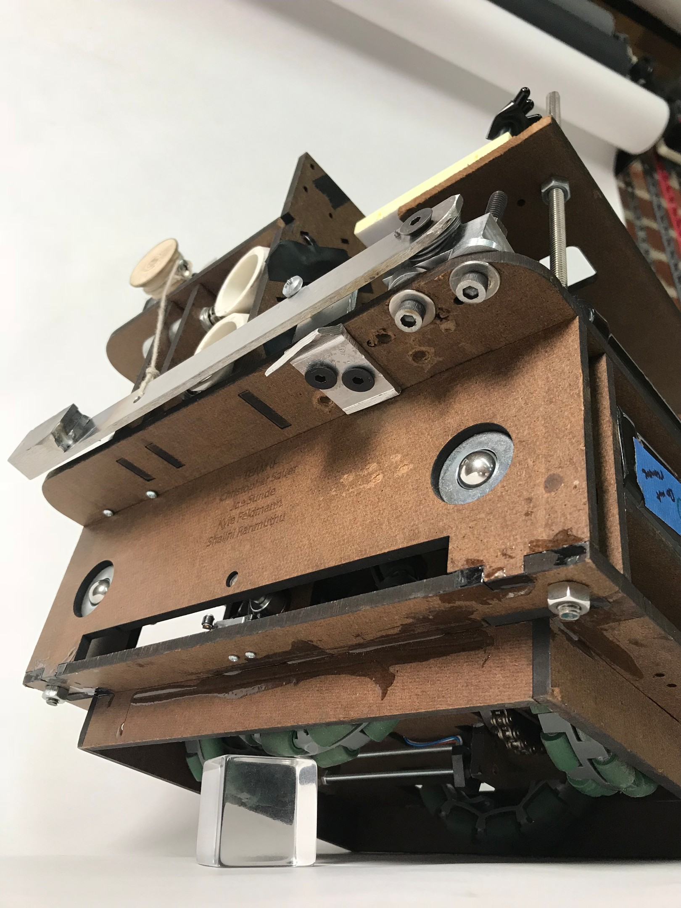

The Team 0 Group, LLC
Winners of the 2018 ME210 Mechatronics Bracket!
The Team: Meet the Members
Joe Sunde | Mechanical Engineering Co-term
Christopher Sauer | Computer Science Co-term
Shalini Ranmuthu | Electrical Engineering Master’s
Kyle Feldmann | Mechanical Engineering Co-term
(from left)
The Objective: Game-Play and Rules
ME 210 is a course that gives students an opportunity to dive into the world of mechatronics (intelligent electro-mechanical design). The course’s final assignment is a 3.5 week team project to create an autonomous bot that completes a series of tasks and can compete against the other 24 bots in the class.
This year’s task was startup themed, the goal of the robot was to dispense balls (Buzzwords) into seesaw like boxes (Funding Rounds and Patent Offices) and to control at least two of them(A and B, or PO and B) to open the gate. Once the gate is open the bot can drive through and enter their opponent’s starting area (Startup Garage) and win the game (acquire the opponent).
The robot can only carry 4 balls at a time and can only reload in the Incubator. The robot only has the walls, black and grey tape on the ground, and a series of IR beacons of different frequency and duty cycle to base its gameplay off of. The task must be completed in 2 minutes and 10 seconds, at which time the robots shut off and whoever has placed the most balls in the Funding Rounds wins.

The Map of ‘Silicon Valley.’
The Evidence: Competition Results
Our robot, configured as in competition.
Victory in the bracket.
Final Round
Semi-Final Round
Quarter-Final Round
Sweet 16 Round
The Strategy: Discussing Design Choices
The group set out from the start with the goal of not only meeting the minimum design requirements but also being competitive in the showcase at the end. While there is no grading benefit to winning, we wanted to have a robot the whole group was proud to share with the class and beyond Stanford. We quickly realized based on our motor selection from the free bin that one of the strengths of the robot was the available motor torque and speed. We knew it would drain power quickly, but provided we had enough power, we would be able to execute a strategy based on making quick maneuvers. Initial testing off a DC power source led us to decide to step down the gear ratio from the gear head slightly in our chain drive. We built a robot around coordinate motion to eliminate time lost in turning, and most importantly, we decided that using a line following strategy would be needlessly slow and instead opted for a physical wall following strategy. This decision had some major benefits. The first is that on a linked coordinate drive system any wander in the system (ie tendency to drive on a curve rather than line) is not correctable by the robot drive system. However, the walls of the course itself allow the edges of the robot to correct its trajectory if the cross drive provides some small amount of force holding the robot against the wall. This is perfect since the funding round bins are located against the wall. Instead of having to stop at each bin and advance from the tracking line, we could execute a “drive by” ball deposit strategy. The coordinate motion strategy also eliminated the need to execute a turn to get through the gate further reducing the cycle time for the robot. Wall tracking allows another benefit in that simple limit switches can be used for tracking the position of the robot. Unlike tape sensors with varying thresholds based on light conditions, tape color, and cracks, limit switches offer a very binary measure of whether the robot has found a limit of the board.
After many close readings of the rules we decided on a competition strategy that included tipping Funding Round A (but not depositing any balls), depositing 3 balls into the Patent Office( ensuring that it would remain in our favor at least until the other team reloaded), and depositing a required 1 ball in Funding Round B while tipping it.
We would repeat this process as many times as we felt would be entirely reliably, as occasionally we would count an extra line before Funding Round A or misfire a ball. We established that two runs through would be enough to ensure that we would have control of at least one of the rounds, so on our subsequent reloads we strategized to dispense 4 balls into the patent office to protect it, and only tip the Funding Rounds.
With our speed and tipping power, we knew that no teams could beat us outright, and that we could tip 25 balls or more from the opponent's side, so we were not worried about teams who filled our Funding Round B only, and not worried about teams taking both A and B while we were reloading.
This methodology differed crucially from our checkoff where we were required to deposit balls in A and B and tipping had no bearing.
The Takeaway: Lessons Learned
One of the pitfalls that is often an easy trap for engineers is the belief that because we have the tools to implement complex solutions these methods are the best way to solve a problem. Choosing simpler solutions early on that didn’t require lots of tuning increased reliability and preserved flexibility for the new challenges and strategies that came up once the game board was finalized.
A perfect example of this is the implementation of threshold sensing using photo-transistors or more neatly tape sensors. In the lab we learned how to design and tune these systems using signal conditioning circuits and comparators with hysteresis. Having this immediate knowledge it is tempting to build a robot that only views its world through tape sensors and IR beacons. However, limit switches are incredibly reliable and provide a useful binary response that takes some threshold calibration to get from IR phototransistors. For a robot living in a world bounded by insurmountable walls, is it necessary to make use of this technology? Our answer we found was yes but to much less a degree than many teams chose. Our initial design included four or six tape sensors. What we quickly realized was that we could simply use one and still be much faster and more efficient than most designs that used several.
A second major lesson was that friction in real systems can be a real wild card. A significant number of robots in the competition or in practice would seemingly get inexplicably grabbed by walls or cracks in the floor or turn unexpectedly. We experienced this the night before the competition testing some final lines of code. The robot would get hung up on the return to the incubator which we determined was because of a small piece of tape on the wall. To this end we found that for our wall following design, bearing casters on the face really helped provide a predictable response.
There is often not one right answer, but at the end of the day, the team does need to make a decision and execute it well. For multiple components of the design there were competing design strategies. However, once the team decided on one, the whole group worked to implement it and continue designing from that point. Sometimes decisions you think are questionable at the beginning end up being much better than you thought. When multiple good options are available and there’s disagreement within the team, it’s critical to reach consensus and all commit to designing a single solution.
Finally building something for a theoretical challenge is more difficult than building for what is in front of you. The late arrival of the game board forced us to make our best guesses about what to expect. One thing we did not account for was how close the beacons would be to the edge of the game board. We also could not predict exactly how the funding rounds would respond to a tipping force. As designers, we had to figure out how to build in flexibility in the physical robot itself and how we structured the code. Defining an architecture early on allowed changes at these later stages to be much simpler and less stressful.
Electrical and Mechanical Design
Schematic
Schematic for entire robot.
Teensy Pinout
| teensy PIN # | teensy PIN type | connecting PIN # | Function |
|---|---|---|---|
| 0 | DIGITAL_OUT | driver1 in1 | N/S motor+ |
| 1 | DIGITAL_OUT | driver1 in2 | N/S motor- |
| 2 | DIGITAL_OUT | driver1 in3 | E/W motor+ |
| 3 | DIGITAL_OUT | driver1 in4 | E/W motor- |
| 4 | PWM | driver1 en1 | N/S motor |
| 5 | PWM | driver1 en2 | E/W motor |
| 6 | DIGITAL_OUT | driver2 in1 | ramp sol top |
| 7 | DIGITAL_OUT | driver2 in2 | ramp sol bottom |
| 8 | DIGITAL_OUT | driver2 in3 | tipper motor |
| 9 | DIGITAL_OUT | driver2 in4 | tipper motor |
| 10 | PWM | driver2 en2 | tipper motor |
| 11 | INPUT_PULLUP | limit switch | ramp switch top |
| 12 | INPUT_PULLUP | limit switch | ramp switch bottom |
| 14 | ANALOG_INPUT | phototransistor | tape sensor |
| 15 | INPUT_PULLUP | limit switch N | wall bumper |
| 16 | INPUT_PULLUP | limit switch E | reloading bumper |
| 17 | INPUT_PULLUP | limit switch S | start/back bumper |
| 18 | ANALOG_INPUT | op-amp output | beacon sensor |
Robot Subsystems
Power Supply and Drivers
Power to the robot was provided by two Gens Ace 7.2V 3000mAh batteries connected in series to form the 14V supply (although actual voltage was slightly higher). A 15A breaker switch was placed in series with the power supply and functioned as an overall power switch. The power supply was connected to both of the L298N drivers, which are rated for at least a 35V supply. The L298N driver boards also have a built-in 5V voltage regulator, and one of these regulator outputs was used to power the Teensy, the tape sensing circuit, and the beacon sensing circuit. A 220uF bypass capacitor was used to stabilize the 5V power line.
The L298N drivers themselves are dual H bridge motor drivers, which means that we could control 4 total motors with this setup. We ended up driving 2 wheel motors, 1 tipper arm motor, and 2 solenoids (8 total outputs) using 8 inputs and 4 enable lines (wired as shown in the schematic).
Drivetrain
We decided to have the robot execute coordinate movement instead of a more traditional isolated two wheel drive. Mechanically, we decided to use two motors with two full width drive axles mechanically linking the advance ratio of each set of drive wheels. We used omni-directional wheels to allow this type of drive system. One of the concerns early on with this system was making sure all wheels are uniformly in contact with the ground at all times to ensure the robot would drive in a straight orthogonal grid. We used a captive design to place pillars holding shoulder bushings and 4 mechanical supports per axle (two closely placed around each drive wheel) The accuracy and repeatability of CAD driven laser cutting allowed easy alignment of the bearing axes and ensuring that all four wheels would contact the ground well. We sized the drive wheels to be 4 inches on one axis and 3.25 inches on the other axis so that the axles could cross each other without interference. We prototyped the drivetrain train levels to confirm our design would work before continuing with the upper level design. Initially, there was enough tolerance variation that the axles would bind in the bushing, so the bearings were opened up a few thousandths of an inch to allow free rolling. The second deck of the robot was the integrated electronics and drive motor deck. This area was more accessible with more space and was thus easier to work in. The axles were connected through the deck with a chain drive system to the DC motors mounted on brackets on top of the second deck. The brackets were mounted in slots to allow proper chain tensioning after the chain was assembled.
Wall Tracking
After being forewarned about the pitfalls of line sensing, we developed another motion sensing system for robust tracking. The wall tracking method consisted of three limit switches mounted to the lower level of the robot on the front, right and rear sides of our bot, in a way that when they are fully engaged the roller sits flush with the outside edge of the robot.
We used wall tracking to trigger our interrupts, and to ensure that we were reaching our desired destinations for dropping balls, tipping, reloading, and finishing a round.
Ball Dispensing
From the start we focused on a simple, robust ball dispensing system. Our ball dispensing system used a pvc tube mounted to a vertical duron board. This tube has holes for a limit switch and a solenoid. The limit switch was used to sense if balls were loaded into the tube, and the solenoid to quickly and reliably dispense balls. The reason we decided to use a solenoid rather than a servo was that it allowed us to more quickly dispense balls while driving quickly, and gave us the ability to dispense one ball at a time if necessary.
We also decided to have two separate ball dispensing systems so that we could selectively load balls depending on the desired functionality. While giving the robot information based on game events was not allowed in a rules update, our system let us load balls in a specific pattern so that we could dispense in different bins after each reload. We ended up using a strategy of dispensing 3 balls into the Patent Office and one into Funding Round B for the first two reloading cycles, and 4 into the Patent Office for each successive reloading cycle.
We also used modified syringes to quickly reload our dispensing tubes cutting reloading time by about 1.5 seconds over hand-loading.
Tape Sensing
We used tape sensing as a secondary sensing system to determine when we were in front of the funding rounds, patent office, or gate. We designed for enough room to integrate three sensors along the bottom of our robot along a threaded rod, but ended up only needing one on the left side of the robot to sense the grey tape marking the funding round locations and the tape marking the gate location. We decided to put the sensor on the left of the robot to give us time to drive and shoot near full speed.
The tape sensor itself consists of the OP265 photodiode and the OP535 phototransistor. The diode drop was measured to be 1.16V. In order to limit the current through the diode to the recommended 40mA and account for some safety margin, we rounded the drop down to , leaving to drop in series with the LED. This resulted in a required resistance value of . From the OP535 datasheet current curves, we initially used a resistor in a sourcing configuration, but we found upon experimentation that a resistor gave a better range.
The low-clearance skirt for our robot was able to block most light and our sensor remained in calibration for our purposes after a few initial calibration tests before checkoff. The values from these calibration tests are shown in the table below. With the calibrated thresholds, we could detect the white game board as well as black, grey, and green tape. We also filtered out cracks and other small objects by sampling at least twice per grey tape width and then checking that we read two of the same tape color value sequentially before reacting to it.
| Test Circuit Values (2/20/18) | Actual Robot Readings (2/27/18) | New Tape Sensor Position (3/2/18) | Different Lighting (3/3/18) | |
|---|---|---|---|---|
| White (no tape) | 1023 (just above saturation. Measured as 3.34V) | 880 | 560 | 950 |
| Black | 125 | 95 | 50 | 100 |
| Grey | 400 | 310 | 160 | 300 |
| Green | 910 | 480 | 260 | 690 |
Tipper Arm
After checking off the basic functionality of the robot, the team decided that the next highest priority for the robot was developing a tipping mechanism. The reasoning was that against a highly functional opponent, in increasingly later game states it would be difficult to regain control of funding rounds by simply dumping balls. In essence, the tipper is the game changer, we could not imagine robots without that level of functionality prevailing against robots with it. Our initial design ideations centered around dropping a weight on a reel or a servo driven “bow drill” poker that provided linear actuation not unlike fire starters of the paleolithic age. We quickly realized that both these strategies limited the speed of our robot through the funding rounds and we would have to make strategy decision: Do we drop balls and move quickly or do we stop to tip? Additionally, when would we know when to tip and how could we pick up the state of the beacon from the funding round before committing to a robot deceleration. These questions sent us back to the drawing board looking for a better solution.
We thought about quick acting high energy sources for quick funding round tipping. Compressed springs or dynamic linkages could provide faster action but would prove complicated. Another idea occurred which was to use on board compressed air to blast a jet of air against the funding round. It wouldn’t be dangerous and violate the safety guidelines but it would provide a dynamic fast acting tipper that would allow drive by tipping along with ball dropping. We started experimenting with air in a can as even the low pressure delta could still provide a regulated choked flow at a pre-sized converging nozzle for air (k = 1.4 requires a minimum delta P of ~ 2) We quickly realized though that the available volume in these cans was fairly small, and the required mass flux was relatively high. We measured tipping force for the funding rounds around 300g and calculated that we would need a minimum nozzle orifice of .05 inch OD. The issue with this was that in testing 10 L allowed us to get 2-3 tips. Using a high pressure CO2 disposable cartridge we could easily get 10L for $2-3. It would be difficult to get more than 10 L in a hand-pumped air canister which we could feasibly get up to 150 psi. However, to get repeatable tips in a round we wanted more and thus started thinking about using refillable liquid CO2 canisters. We did some quick research and realized that this would not only be a hassle but was definitely outside the available funding range for the robot.
The team went back to the drawing board a second time and came up with the idea of a “snow plow” tipper. This tipper would operate while driving and be able to bounce over the funding rounds applying a tipping impulse and bounce over the wall of the game board if necessary. The first conceptual version was a stiff steel spring mounted between two points that could be brought towards each other thus lowering the plow into tipping position. Through its compliance, it would be able to depress the funding rounds without causing damage to the robot. Finding the right spring material proved a challenge though so we switched to the idea of a weighted swing arm that could be pulled up by a non-backdriveable DC motor. At first the arm did not reach the funding bins so shims and an angled guide were used to get the arm to extend out further.
Reloading Mechanisms
Using a coordinate drive system allowed us to trigger the reload beacon by driving directly into it. The robot was able to register a reload through limit switches placed as obstructions at the entrance of each tube (switch would be triggered as balls passed through into the tube). In order to load the balls quickly, we fabricated custom ball loaders out of large plunger syringes. The end was modified to have a flap valve that allowed the balls to be pushed through. A fast reloading mechanism allowed the software to wait for a much shorter time before assuming reloading was complete.
Beacon Sensing
We decided that the easiest and fastest strategy would be to only read the beacon at the gate, and not have to worry about filtering in hardware (especially since the signals were square waves and not sinusoidal) or checking the frequency in software (would require some wait wait time) to separate and read the different beacon signals. This allowed us to just use an active high-pass filtering circuit (inverting topology) to remove DC interference as well as 60Hz noise from the overhead lights. We initially added a single phototransistor to the input of this filter in a sourcing configuration to sense the LED beacon. However, since each phototransistor has a fairly narrow field of view, we used 4 phototransistors connected in parallel and physically arranged to be facing slightly different angles but at the same height. This allowed us to repeatedly sense the gate beacon despite slight changes in the robot orientation. Since the gate beacon has the highest duty cycle frequency of 4125Hz and the next highest beacon is at 3500Hz, the filter was designed to have a cutoff frequency of . The gain was set to .
In order to avoid reading the frequency in software and also to smooth out sudden fluctuations in sensor readings, a 1uF capacitor was added as an integrator to the output of the active filter (which would affect the theoretical gain calculated above). We experimented with smaller capacitor values, but found the time constant was too small to effectively smooth out the duty cycle. The result of this design was that the input to the Teensy would now be a steady value that represented the average of the amplified duty cycle, instead of the duty cycled signal itself. When the beacon was on, this amplified average value would be around 1V whereas it would be close to 0.05V when the beacon was off. This simplified the software’s job to quickly reading an analog value, which it would then compare to some experimentally determined threshold value.
Bill of Materials
| Quantity | Part Name | Part Number |
|---|---|---|
| 2 | 4" Omni Wheel | Vex 276-3525 |
| 2 | 3.25" Omni Wheel | Vex 276-2185 |
| 2 | Planetary Gear 12 V DC Motor | ServoCity638278 |
| 2 | 1/4" Axle Machined | |
| 2 | Gens Ace 7.2V 3000mAh battery | |
| 1 | 3ft Chain | .25" pitch |
| 2 | Chain Connecting Links | .25" pitch |
| 2 | 16 Tooth Sprockets | .25" pitch |
| 2 | 23 Tooth Sprockets | .25" pitch |
| 8 | Bushing, flanged, 1/4" ID x 1/4" long | McMaster3746K2 |
| 4 | Collar, set screw, steel, 1/4" | ServoCity 6432K12 |
| 2 | Solenoid | Jameco 2202335 |
| 2 | castor wheels | |
| 1 | Large threaded rod | 1/4-20 |
| 2 | Small Threaded Rods | 10-32 |
| 2 | Duron 18"x 24" | |
| 1 | misc. small hardware | |
| 1 | DC Motor from free bin | |
| 1 | Woodturned Pulley | |
| 1 | Welded steel tipping arm | Stainless Steel |
| 1 | Machined Tipping Arm Mount | 6061 Aluminum |
| 2 | Machined PVC tubes | 1.25" PVC Tubing |
| 4 | Zip ties | |
| 1 | Cotton String | |
| 1 | 15A Breaker | 1724R13A |
| 1 | Teensy | V3.2 |
| 2 | Half Proto-Boards | |
| 1 | Tape Sensor | opb704wz |
| 2 | L298N motor driver | |
| 5 | limit switches | jameco 2187905 |
| 50 | Stranded Wires | as in schematic |
| 3 | Capacitors | as in schematic |
| 5 | Resistors | as in schematic |
| 1 | Op-Amp | LM324N |
| 4 | Phototransisotrs | LTR-3208E |
Software
Goals and Philosophy
Our software design philosophy was aligned with that for our mechanical and electrical design: Solve known challenges fast, while preserving the flexibility required to quickly address future challenges that arose as details about the game board and our competitors emerged.
Since software is a more malleable medium than hardware, we knew we could take valuable architectural risks if we started early. Software also benefits from hierarchical abstractions; finding the right abstractions early would dramatically speed development later.
Strategy and Design Decisions
Thus, code development began early and in parallel with hardware. We built test circuits for each component and wrote quick code to drive them. Then, offline, we’d turn that test code into something robust and modular that would support all the functions we needed of that part of the robot.
We knew early that we would need to have many logical threads of execution running in parallel. As an example, the robot would need to simultaneously: track the north wall, lower its tipper, deposit balls, count grey tape lines, and move left. Each would be driven by interrupts and run very quickly.
Traditional threading was the wrong solution, even if Teensy Threads were available. Preemptive multitasking requires sophisticated concurrency control mechanisms and tends to leak state through abstractions.
Cooperative multitasking was clearly a better and simpler solution. Since we’re running on a single-core system and each routine runs extremely quickly, it would save us from most concurrency-related bugs. Teensy Fibers didn’t seem to provide the right interface around interrupts, so we settled on building our own interrupt-driven infrastructure.
Beginning from the End
It’s easiest to explain the abstractions we chose by starting with the final sketch we wrote. We’ll explain what properties we wanted it to have and then building upwards through the dependency graph of C++ libraries we wrote to support it.
// __ _________ ___ _______
// / |/ / ____/ |__ \< / __ \
// / /|_/ / __/ __/ // / / / /
// / / / / /___ / __// / /_/ /
// _///__/_/_____/ /____/_/\___//__
// /_ __/__ ____ _____ ___ / __ \
// / / / _ \/ __ `/ __ `__ \ / / / /
// / / / __/ /_/ / / / / / / / /_/ /
// /_/ \___/\__,_/_/ /_/ /_/ \____/
//
// Don't be first. Be zeroth.
// (c) Kyle, Shalini, Christopher, Joe
#include "DriveMotor.hpp"
#include "LaunchTube.hpp"
#include "TapeSensor.hpp"
#include "TipperMotor.hpp"
static LaunchTube upperTube(6, 11, 1); //solenoid pin, switch pin, initial ball count
static LaunchTube lowerTube(7, 12, 3);
static DriveMotor xAxisMotor(2, 3, 5, true, 16); //out1 pin, out2 pin, en pin, direction, switch pin
static DriveMotor yAxisMotor(0, 1, 4, false, 15, 17);
static TipperMotor tipper(8, 9, 10, false); //out1 pin, out2 pin, en pin, direction
static TapeSensor tapeSensor(14, 15000); //phototransistor pin, minimum microsec over a line
static const uint32_t GATE_SENSOR_PIN = 18;
static uint32_t startMillis = 0;
static int greyCount = 0;
static int greenCount = 0;
void setup() {
// Init serial object.
Serial.begin(0); // Baud rate ignored. Teensy USB is always standard 12 Mbit/sec
analogWriteResolution(10); // Real resolution at this frequency.
pinMode(GATE_SENSOR_PIN, INPUT);
Serial.println("Booted");
yAxisMotor.notifyOnNextNegativeLimitPress([]() {
startMillis = millis(); // Stop play at 2:10
primaryPass();
Serial.println("Started");
});
}
static void primaryPass() {
xAxisMotor.timedMove(-1023, 0.4*1000000, []() {
yAxisMotor.moveToLimit(400, []() { //go @ 400 power until we hit wall track switch
tipper.down();
xAxisMotor.move(-420);
yAxisMotor.trackPositiveLimit(400);
greyCount = 0;
tapeSensor.observeGrey([]() {
greyCount++;
if (greyCount == 1) { //hit first grey line
xAxisMotor.timedMove(0, 0.8*1000000, []() {
xAxisMotor.move(-340);
});
} else if (greyCount == 2) { //hit second grey line
xAxisMotor.stop();
lowerTube.dumpBallsPresent([]() {
xAxisMotor.move(-370);
});
} else if (greyCount == 3) { //hit third grey line
upperTube.dumpBallsPresent([]() {});
tapeSensor.stopObserving();
thirdGreyToGateAttempt();
}
});
});
});
}
static void thirdGreyToGateAttempt() {
yAxisMotor.stopTrackingPositiveLimit(); // Stop hugging wall to avoid turning
xAxisMotor.timedMove(0, 1.5*1000000, []() {
tipper.up();
xAxisMotor.move(-400); //not full speed so you don't slam into wall by the gate
tapeSensor.observeBlack([]() { //hit black line in front of gate
tapeSensor.stopObserving();
xAxisMotor.stop();
if (gateOpen()) {
// Sprint until we've won, then slowly drive through to the wall.
yAxisMotor.move(1023);
greenCount = 0;
tapeSensor.observeGreen([]() {
greenCount++;
if (greenCount == 2) {
yAxisMotor.moveToLimit(300, []() {
// We've won!
disableAll();
});
}
});
} else {
moveToReload();
}
});
});
}
static void moveToReload() {
// Timed sprint toward South wall
yAxisMotor.timedMove(-1023, 0.4*1000000, []() {
// Finish moving South
yAxisMotor.moveToLimit(-500, []() {
// Pull away from South wall to reduce friction
yAxisMotor.timedMove(400, 0.6*1000000, [](){});
// Timed sprint toward East wall
xAxisMotor.timedMove(1023, 3.1*1000000, [](){ //~3.5
// Finish moving East and stay there
xAxisMotor.moveToLimit(500, []() {
xAxisMotor.timedMove(1023, 0.05*1000000, [](){}); // back off just a bit
// Go up and hit the button.
yAxisMotor.trackPositiveLimit(600);
// wait for reload, then continue
lowerTube.notifyOnNextLoad([](){
yAxisMotor.stopTrackingPositiveLimit();
xAxisMotor.stopTrackingPositiveLimit();
secondaryPass();
});
});
});
});
});
}
static void secondaryPass() {
// Reset against round wall
yAxisMotor.timedMove(-400, 0.3*1000000, [](){});
xAxisMotor.timedMove(-1023, 1.0*1000000, [](){
yAxisMotor.moveToLimit(400, [](){
tipper.down();
yAxisMotor.trackPositiveLimit(400);
xAxisMotor.move(-1023);
greyCount = 0;
tapeSensor.observeGrey([]() {
greyCount++;
if (greyCount == 1) { //hit first grey line
xAxisMotor.timedMove(0, 0.8*1000000, []() {
xAxisMotor.move(-340);
});
} else if (greyCount == 2) { //hit second grey line
xAxisMotor.stop();
lowerTube.dumpBallsPresent([]() {
xAxisMotor.move(upperTube.hasBalls() ? -370 : -1023);
});
} else if (greyCount == 3) { //hit third grey line
if (upperTube.hasBalls()) {
upperTube.dumpBallsPresent([]() {
tapeSensor.stopObserving();
thirdGreyToGateAttempt();
});
} else {
tapeSensor.stopObserving();
thirdGreyToGateAttempt();
}
}
});
});
});
}
static bool gateOpen() {
Serial.print("Gate says: "); Serial.println(analogRead(GATE_SENSOR_PIN));
// return false;
return analogRead(GATE_SENSOR_PIN) > 15;
}
static void disableAll() {
Serial.println("Disabled");
upperTube.disable();
lowerTube.disable();
tapeSensor.stopObserving();
xAxisMotor.disable();
yAxisMotor.disable();
tipper.disable();
}
void loop() {
if (startMillis != 0 && millis() > startMillis + (2*60 + 10) * 1000) {
disableAll();
startMillis = 0;
}
Serial.println("*"); delay(500);
}
Blocking code would have been extremely problematic given the concurrent and interrupt-driven requirements of the program. But you’ll notice that the program reads (and writes!) almost as easily as blocking code would. You declare sequentially all the things you want to happen at the same time—since the processor operates so fast compared to physical world time—and declare the things you want to happen when the operation completes inside of completion handler. If you’ve ever programmed for iOS, Grand Central Dispatch is somewhat similar. The callbacks are handled as C++11 lambdas, which turn code into a callable object with associated data.
Further, at the top level, everything is semantic. You declare what you want done—move in the positive x direction for z seconds—and the implementation is handled by the libraries.
Our libraries for controlling are as follows:
- TapeSensor: Manages de-noising tape crossings and notifying the main program
- DriveMotor: Controls a motor and its interaction with the limit switches tracking its position. Two instances, one for each coordinate axis.
- LaunchTube: Manages launching balls, counting the number of balls loaded, and notifying the main program on reload. Two instances, one for each physical tube.
- TipperMotor: Manages raising and lowering the tipper arm asynchronously.
They’re supported by the following abstractions around timers and interrupts:
- LambdaInterrupt: Modifies interrupts on digital pins to dispatch to lambdas instead of function pointers, as in Arduino’s implementation.
- DebouncedInterrupt: A version of the above that has a maximum firing frequency, easily adjustable in software.
- LambdaTimer: IntervalTimer modified to call lambdas. Dynamically allocates itself onto one of the 4 hardware timers.
- DispatchAfter: Uses a LambdaTimer to call you back once after a certain interval has elapsed. Then deallocated the timer.
- MissingSystemFunctions: Fools the C++ standard libraries to link by faking like we’re running on an OS.
You’ll also see some other code in the main sketch. We implemented gate sensing directly in there because it was so few lines that it didn’t merit an abstraction boundary. When interrupts aren’t driving the code, the main loop prints out asterisks as a heartbeat to let us know that the program is still running. Without a debugger, that’s the only easy way to know if our function-pointer shenanigans had crashed the program. Finally you’ll notice that we implemented the kill timer by polling. We don’t like it either, but it’s too long for the hardware timers, and it’s just using up whatever spare processing power isn’t consumed by the interrupts.
Infrastructure
In order to understand how the higher level abstractions work, we first have to talk through the lower level ones.
LambdaInterrupt
The first obstacle is that Arduino’s interrupt handling makes building object-oriented abstractions on top of it impossible. Since it only calls back function pointers, it can’t associate data with the calls. That means it can’t call back an instance of a class, which means you can’t wrap logic you want to instantiate multiple off in a class. This is really bad.
Here’s a solution, where we wrap Arduino’s interrupt dispatch to make it call lambdas.
The syntax is a little obtuse, but basically we’re just making a giant bank of functions that we always point the interrupts to. These functions just route the call to out std::function from a lookup table.
// __ _________ ___ _______
// / |/ / ____/ |__ \< / __ \
// / /|_/ / __/ __/ // / / / /
// / / / / /___ / __// / /_/ /
// _///__/_/_____/ /____/_/\___//__
// /_ __/__ ____ _____ ___ / __ \
// / / / _ \/ __ `/ __ `__ \ / / / /
// / / / __/ /_/ / / / / / / / /_/ /
// /_/ \___/\__,_/_/ /_/ /_/ \____/
//
// Don't be first. Be zeroth.
// (c) Kyle, Shalini, Christopher, Joe
#pragma once
#include <functional>
// Wrapper of Teensy Interrupts to support binding state with c++11 lambdas.
// You need this functionality to be able to wrap interrupt calls inide of a class.
// (You'll be much happier using this interface than looking at the implementation)
namespace LambdaInterrupt {
// Assumes you've already set the pinmode
void attach(uint8_t pin, uint8_t event_type, std::function<void()> callback);
void detatch(uint8_t pin);
};
// __ _________ ___ _______
// / |/ / ____/ |__ \< / __ \
// / /|_/ / __/ __/ // / / / /
// / / / / /___ / __// / /_/ /
// _///__/_/_____/ /____/_/\___//__
// /_ __/__ ____ _____ ___ / __ \
// / / / _ \/ __ `/ __ `__ \ / / / /
// / / / __/ /_/ / / / / / / / /_/ /
// /_/ \___/\__,_/_/ /_/ /_/ \____/
//
// Don't be first. Be zeroth.
// (c) Kyle, Shalini, Christopher, Joe
#include "LambdaInterrupt.hpp"
#include <Arduino.h>
// General stratedy: Define a fixed size block of functions, one per pin.
// Those functions just dispatch the incoming call to the requested callback.
namespace LambdaInterrupt {
static std::function<void()> callbacks[24]; // From user
// Begin: Dispatch table code
#define DISPATCH_FN_FACTORY(n) static void _isr_dispatch_##n() { callbacks[n](); }
DISPATCH_FN_FACTORY(0) DISPATCH_FN_FACTORY(1) DISPATCH_FN_FACTORY(2)
DISPATCH_FN_FACTORY(3) DISPATCH_FN_FACTORY(4) DISPATCH_FN_FACTORY(5)
DISPATCH_FN_FACTORY(6) DISPATCH_FN_FACTORY(7) DISPATCH_FN_FACTORY(8)
DISPATCH_FN_FACTORY(9) DISPATCH_FN_FACTORY(10) DISPATCH_FN_FACTORY(11)
DISPATCH_FN_FACTORY(12) DISPATCH_FN_FACTORY(13) DISPATCH_FN_FACTORY(14)
DISPATCH_FN_FACTORY(15) DISPATCH_FN_FACTORY(16) DISPATCH_FN_FACTORY(17)
DISPATCH_FN_FACTORY(18) DISPATCH_FN_FACTORY(19) DISPATCH_FN_FACTORY(20)
DISPATCH_FN_FACTORY(21) DISPATCH_FN_FACTORY(22) DISPATCH_FN_FACTORY(23)
#undef DISPATCH_FN_FACTORY
static void (*isr_dispatch_table[])() = {
_isr_dispatch_0, _isr_dispatch_1, _isr_dispatch_2,
_isr_dispatch_3, _isr_dispatch_4, _isr_dispatch_5,
_isr_dispatch_6, _isr_dispatch_7, _isr_dispatch_8,
_isr_dispatch_9, _isr_dispatch_10, _isr_dispatch_11,
_isr_dispatch_12, _isr_dispatch_13, _isr_dispatch_14,
_isr_dispatch_15, _isr_dispatch_16, _isr_dispatch_17,
_isr_dispatch_18, _isr_dispatch_19, _isr_dispatch_20,
_isr_dispatch_21, _isr_dispatch_22, _isr_dispatch_23
};
// End: Dispatch table code
void attach(uint8_t pin, uint8_t event_type, std::function<void()> callback) {
callbacks[pin] = callback;
attachInterrupt(digitalPinToInterrupt(pin), isr_dispatch_table[pin], event_type);
}
void detatch(uint8_t pin) {
detachInterrupt(digitalPinToInterrupt(pin));
}
};
DebouncedInterrupt
We’ll then wrap the above to have a maximum firing frequency, easily adjustable in software. This increases our development speed, because it saves having to build filters and hysteresis circuits.
It works by storing the last call time and suppressing callbacks that occur too quickly after the first one.
We wrote this class primarily for counting balls going into the launch tubes.
#pragma once
// __ _________ ___ _______
// / |/ / ____/ |__ \< / __ \
// / /|_/ / __/ __/ // / / / /
// / / / / /___ / __// / /_/ /
// _///__/_/_____/ /____/_/\___//__
// /_ __/__ ____ _____ ___ / __ \
// / / / _ \/ __ `/ __ `__ \ / / / /
// / / / __/ /_/ / / / / / / / /_/ /
// /_/ \___/\__,_/_/ /_/ /_/ \____/
//
// Don't be first. Be zeroth.
// (c) Kyle, Shalini, Christopher, Joe
#include "DispatchAfter.hpp"
class DebouncedInterrupt {
public:
// Usage example for an even that could happen at most 4 times a second:
// DebouncedInterrupt(10, INPUT_PULLUP, FALLING, 250000 /*us*/, [this]() {
// // Respond to event.
// });
DebouncedInterrupt(uint8_t pin, uint8_t pinmode, uint8_t event_type, uint32_t min_period /*us*/, std::function<void()> callback);
~DebouncedInterrupt();
// For detecting after a debounced burst has finished.
void dispatchAfterBurstFinish(uint32_t max_time_between_triggers, std::function<void()> callback);
// Stops you getting callbacks on this pin.
void disable();
private:
DispatchAfter burst_finish;
std::function<void()> burst_callback;
uint32_t max_time_between_triggers;
const uint8_t pin;
const std::function<void()> callback;
const uint32_t min_period;
uint32_t last_fire;
bool active;
};
// __ _________ ___ _______
// / |/ / ____/ |__ \< / __ \
// / /|_/ / __/ __/ // / / / /
// / / / / /___ / __// / /_/ /
// _///__/_/_____/ /____/_/\___//__
// /_ __/__ ____ _____ ___ / __ \
// / / / _ \/ __ `/ __ `__ \ / / / /
// / / / __/ /_/ / / / / / / / /_/ /
// /_/ \___/\__,_/_/ /_/ /_/ \____/
//
// Don't be first. Be zeroth.
// (c) Kyle, Shalini, Christopher, Joe
#include "DebouncedInterrupt.hpp"
#include "LambdaInterrupt.hpp"
#include <Arduino.h>
DebouncedInterrupt::DebouncedInterrupt(uint8_t pin, uint8_t pinmode, uint8_t event_type, uint32_t min_period, std::function<void()> callback) :
pin(pin),
callback(callback),
min_period(min_period),
last_fire(0),
active(true)
{
pinMode(pin, pinmode);
LambdaInterrupt::attach(pin, event_type, [this]() {
uint32_t curr_time = micros();
if (curr_time - last_fire >= this->min_period) {
last_fire = curr_time;
if (burst_callback) {
// schedules for the first time or reschedules into the future
burst_finish.schedule(max_time_between_triggers, [this]() {
burst_callback();
burst_callback = [](){};
});
}
this->callback();
}
});
}
DebouncedInterrupt::~DebouncedInterrupt() {
disable();
}
void DebouncedInterrupt::dispatchAfterBurstFinish(uint32_t max_time_between_triggers, std::function<void()> callback) {
this->max_time_between_triggers = max_time_between_triggers;
this->burst_callback = callback;
}
void DebouncedInterrupt::disable() {
if (active) {
burst_finish.cancel();
LambdaInterrupt::detatch(pin);
active = false;
}
}
LambdaTimer
For the same reasons we needed to modify attachInterrupt, we need to change IntervalTimer modified to call lambdas. Here’s a modified version of IntervalTimer. As with the original, it dynamically allocates itself onto one of the 4 hardware timers.
The trickiness in the code is in not deallocating lambdas while they’re running. A naive implementation would delete running lambdas if they descheduled themselves while running—especially if they reallocated another lambda in their place. This leads to really nasty bugs. Instead, we defer deallocation of internal resources until after the lambda call has ended.
#pragma once
// __ _________ ___ _______
// / |/ / ____/ |__ \< / __ \
// / /|_/ / __/ __/ // / / / /
// / / / / /___ / __// / /_/ /
// _///__/_/_____/ /____/_/\___//__
// /_ __/__ ____ _____ ___ / __ \
// / / / _ \/ __ `/ __ `__ \ / / / /
// / / / __/ /_/ / / / / / / / /_/ /
// /_/ \___/\__,_/_/ /_/ /_/ \____/
//
// Don't be first. Be zeroth.
// (c) Kyle, Shalini, Christopher, Joe
// Modernized by Christopher Sauer on 2/24/2018 to take lambdas instead of fnptrs
/* Teensyduino Core Library
* http://www.pjrc.com/teensy/
* Copyright (c) 2017 PJRC.COM, LLC.
*
* Permission is hereby granted, free of charge, to any person obtaining
* a copy of this software and associated documentation files (the
* "Software"), to deal in the Software without restriction, including
* without limitation the rights to use, copy, modify, merge, publish,
* distribute, sublicense, and/or sell copies of the Software, and to
* permit persons to whom the Software is furnished to do so, subject to
* the following conditions:
*
* 1. The above copyright notice and this permission notice shall be
* included in all copies or substantial portions of the Software.
*
* 2. If the Software is incorporated into a build system that allows
* selection among a list of target devices, then similar target
* devices manufactured by PJRC.COM must be included in the list of
* target devices and selectable in the same manner.
*
* THE SOFTWARE IS PROVIDED "AS IS", WITHOUT WARRANTY OF ANY KIND,
* EXPRESS OR IMPLIED, INCLUDING BUT NOT LIMITED TO THE WARRANTIES OF
* MERCHANTABILITY, FITNESS FOR A PARTICULAR PURPOSE AND
* NONINFRINGEMENT. IN NO EVENT SHALL THE AUTHORS OR COPYRIGHT HOLDERS
* BE LIABLE FOR ANY CLAIM, DAMAGES OR OTHER LIABILITY, WHETHER IN AN
* ACTION OF CONTRACT, TORT OR OTHERWISE, ARISING FROM, OUT OF OR IN
* CONNECTION WITH THE SOFTWARE OR THE USE OR OTHER DEALINGS IN THE
* SOFTWARE.
*/
#include "kinetis.h"
#include <functional>
class LambdaTimer {
private:
static const uint32_t MAX_PERIOD = UINT32_MAX / (F_BUS / 1000000.0);
public:
LambdaTimer();
~LambdaTimer();
bool active();
bool begin(uint32_t microseconds, std::function<void()> callback);
void update(uint32_t microseconds);
void end();
void priority(uint8_t n);
operator IRQ_NUMBER_t();
private:
friend void pit_isr();
friend void pit0_isr();
friend void pit1_isr();
friend void pit2_isr();
friend void pit3_isr();
void deallocResources();
KINETISK_PIT_CHANNEL_t *channel;
uint8_t nvic_priority;
#if defined(KINETISL)
static uint8_t nvic_priorites[2];
#endif
bool beginCycles(uint32_t cycles, std::function<void()> callback);
};
// __ _________ ___ _______
// / |/ / ____/ |__ \< / __ \
// / /|_/ / __/ __/ // / / / /
// / / / / /___ / __// / /_/ /
// _///__/_/_____/ /____/_/\___//__
// /_ __/__ ____ _____ ___ / __ \
// / / / _ \/ __ `/ __ `__ \ / / / /
// / / / __/ /_/ / / / / / / / /_/ /
// /_/ \___/\__,_/_/ /_/ /_/ \____/
//
// Don't be first. Be zeroth.
// (c) Kyle, Shalini, Christopher, Joe
// Modernized by Christopher Sauer on 2/24/2018 to take lambdas instead of fnptrs
/* Teensyduino Core Library
* http://www.pjrc.com/teensy/
* Copyright (c) 2017 PJRC.COM, LLC.
*
* Permission is hereby granted, free of charge, to any person obtaining
* a copy of this software and associated documentation files (the
* "Software"), to deal in the Software without restriction, including
* without limitation the rights to use, copy, modify, merge, publish,
* distribute, sublicense, and/or sell copies of the Software, and to
* permit persons to whom the Software is furnished to do so, subject to
* the following conditions:
*
* 1. The above copyright notice and this permission notice shall be
* included in all copies or substantial portions of the Software.
*
* 2. If the Software is incorporated into a build system that allows
* selection among a list of target devices, then similar target
* devices manufactured by PJRC.COM must be included in the list of
* target devices and selectable in the same manner.
*
* THE SOFTWARE IS PROVIDED "AS IS", WITHOUT WARRANTY OF ANY KIND,
* EXPRESS OR IMPLIED, INCLUDING BUT NOT LIMITED TO THE WARRANTIES OF
* MERCHANTABILITY, FITNESS FOR A PARTICULAR PURPOSE AND
* NONINFRINGEMENT. IN NO EVENT SHALL THE AUTHORS OR COPYRIGHT HOLDERS
* BE LIABLE FOR ANY CLAIM, DAMAGES OR OTHER LIABILITY, WHETHER IN AN
* ACTION OF CONTRACT, TORT OR OTHERWISE, ARISING FROM, OUT OF OR IN
* CONNECTION WITH THE SOFTWARE OR THE USE OR OTHER DEALINGS IN THE
* SOFTWARE.
*/
#include "LambdaTimer.hpp"
#include <Arduino.h>
#if defined(KINETISK)
#define NUM_CHANNELS 4
#elif defined(KINETISL)
#define NUM_CHANNELS 2
uint8_t LambdaTimer::nvic_priorites[2] = {255, 255};
#endif
static std::function<void()> funct_table[NUM_CHANNELS];
static LambdaTimer* dealloc_on_exit[NUM_CHANNELS] = {nullptr};
LambdaTimer::LambdaTimer() {
channel = nullptr;
nvic_priority = 128;
}
LambdaTimer::~LambdaTimer() {
deallocResources();
}
bool LambdaTimer::active() {
const int index = channel - KINETISK_PIT_CHANNELS;
return channel != nullptr && dealloc_on_exit[index] == false;
}
bool LambdaTimer::begin(uint32_t microseconds, std::function<void()> callback) {
if (microseconds == 0 || microseconds > MAX_PERIOD)
return false;
uint32_t cycles = (F_BUS / 1000000) * microseconds - 1;
if (cycles < 36) return false;
return beginCycles(cycles, callback);
}
void LambdaTimer::update(uint32_t microseconds) {
if (microseconds == 0 || microseconds > MAX_PERIOD) return;
uint32_t cycles = (F_BUS / 1000000) * microseconds - 1;
if (cycles < 36) return;
if (channel) channel->LDVAL = cycles;
}
bool LambdaTimer::beginCycles(uint32_t cycles, std::function<void()> callback)
{
if (channel) {
channel->TCTRL = 0;
channel->TFLG = 1;
} else {
SIM_SCGC6 |= SIM_SCGC6_PIT;
__asm__ volatile("nop"); // solves timing problem on Teensy 3.5
PIT_MCR = 1;
channel = KINETISK_PIT_CHANNELS;
while (1) {
if (channel->TCTRL == 0) break;
if (++channel >= KINETISK_PIT_CHANNELS + NUM_CHANNELS) {
Serial.println("Out of timers");
channel = nullptr;
return false;
}
}
}
int index = channel - KINETISK_PIT_CHANNELS;
dealloc_on_exit[index] = nullptr;
funct_table[index] = callback;
channel->LDVAL = cycles;
channel->TCTRL = 3;
#if defined(KINETISK)
NVIC_SET_PRIORITY(IRQ_PIT_CH0 + index, nvic_priority);
NVIC_ENABLE_IRQ(IRQ_PIT_CH0 + index);
#elif defined(KINETISL)
nvic_priorites[index] = nvic_priority;
if (nvic_priorites[0] <= nvic_priorites[1]) {
NVIC_SET_PRIORITY(IRQ_PIT, nvic_priorites[0]);
} else {
NVIC_SET_PRIORITY(IRQ_PIT, nvic_priorites[1]);
}
NVIC_ENABLE_IRQ(IRQ_PIT);
#endif
Serial.print("Allocating timer"); Serial.println(index);
return true;
}
void LambdaTimer::end() {
if (channel) {
const int index = channel - KINETISK_PIT_CHANNELS;
dealloc_on_exit[index] = this;
}
}
void LambdaTimer::deallocResources() {
if (channel) {
int index = channel - KINETISK_PIT_CHANNELS;
Serial.print("Deallocating timer"); Serial.println(index);
#if defined(KINETISK)
NVIC_DISABLE_IRQ(IRQ_PIT_CH0 + index);
#elif defined(KINETISL)
// TODO: disable IRQ_PIT, but only if both instances ended
#endif
funct_table[index] = std::function<void()>();
channel->TCTRL = 0;
#if defined(KINETISL)
nvic_priorites[index] = 255;
if (nvic_priorites[0] <= nvic_priorites[1]) {
NVIC_SET_PRIORITY(IRQ_PIT, nvic_priorites[0]);
} else {
NVIC_SET_PRIORITY(IRQ_PIT, nvic_priorites[1]);
}
#endif
channel = nullptr;
}
}
void LambdaTimer::priority(uint8_t n) {
nvic_priority = n;
#if defined(KINETISK)
if (channel) {
int index = channel - KINETISK_PIT_CHANNELS;
NVIC_SET_PRIORITY(IRQ_PIT_CH0 + index, nvic_priority);
}
#elif defined(KINETISL)
if (channel) {
int index = channel - KINETISK_PIT_CHANNELS;
nvic_priorites[index] = nvic_priority;
if (nvic_priorites[0] <= nvic_priorites[1]) {
NVIC_SET_PRIORITY(IRQ_PIT, nvic_priorites[0]);
} else {
NVIC_SET_PRIORITY(IRQ_PIT, nvic_priorites[1]);
}
}
#endif
}
LambdaTimer::operator IRQ_NUMBER_t() {
if (channel) {
#if defined(KINETISK)
int index = channel - KINETISK_PIT_CHANNELS;
return (IRQ_NUMBER_t)(IRQ_PIT_CH0 + index);
#elif defined(KINETISL)
return IRQ_PIT;
#endif
}
return (IRQ_NUMBER_t)NVIC_NUM_INTERRUPTS;
}
#if defined(KINETISK)
void pit0_isr()
{
PIT_TFLG0 = 1;
if (funct_table[0] && !dealloc_on_exit[0])
funct_table[0]();
if (dealloc_on_exit[0]) {
dealloc_on_exit[0]->deallocResources();
dealloc_on_exit[0] = nullptr;
}
}
void pit1_isr() {
PIT_TFLG1 = 1;
if (funct_table[1] && !dealloc_on_exit[1])
funct_table[1]();
if (dealloc_on_exit[1]) {
dealloc_on_exit[1]->deallocResources();
dealloc_on_exit[1] = nullptr;
}
}
void pit2_isr() {
PIT_TFLG2 = 1;
if (funct_table[2] && !dealloc_on_exit[2])
funct_table[2]();
if (dealloc_on_exit[2]) {
dealloc_on_exit[2]->deallocResources();
dealloc_on_exit[2] = nullptr;
}
}
void pit3_isr() {
PIT_TFLG3 = 1;
if (funct_table[3] && !dealloc_on_exit[3])
funct_table[3]();
if (dealloc_on_exit[3]) {
dealloc_on_exit[3]->deallocResources();
dealloc_on_exit[3] = nullptr;
}
}
#elif defined(KINETISL)
void pit_isr() {
if (PIT_TFLG0) {
PIT_TFLG0 = 1;
if (funct_table[0])
funct_table[0]();
}
if (PIT_TFLG1) {
PIT_TFLG1 = 1;
if (funct_table[1])
funct_table[1]();
}
}
#endif
DispatchAfter
This is a wrapper around a LambdaTimer that calls you back once after a certain interval has elapsed and hen deallocated the timer. It’s simple code, but saves having to do manual deallocation over and over.
#pragma once
// __ _________ ___ _______
// / |/ / ____/ |__ \< / __ \
// / /|_/ / __/ __/ // / / / /
// / / / / /___ / __// / /_/ /
// _///__/_/_____/ /____/_/\___//__
// /_ __/__ ____ _____ ___ / __ \
// / / / _ \/ __ `/ __ `__ \ / / / /
// / / / __/ /_/ / / / / / / / /_/ /
// /_/ \___/\__,_/_/ /_/ /_/ \____/
//
// Don't be first. Be zeroth.
// (c) Kyle, Shalini, Christopher, Joe
#include "LambdaTimer.hpp"
class DispatchAfter{
public:
void schedule(uint32_t microseconds, std::function<void()> callback);
void cancel();
private:
LambdaTimer timer;
};
// __ _________ ___ _______
// / |/ / ____/ |__ \< / __ \
// / /|_/ / __/ __/ // / / / /
// / / / / /___ / __// / /_/ /
// _///__/_/_____/ /____/_/\___//__
// /_ __/__ ____ _____ ___ / __ \
// / / / _ \/ __ `/ __ `__ \ / / / /
// / / / __/ /_/ / / / / / / / /_/ /
// /_/ \___/\__,_/_/ /_/ /_/ \____/
//
// Don't be first. Be zeroth.
// (c) Kyle, Shalini, Christopher, Joe
#include "DispatchAfter.hpp"
#include <Arduino.h>
void DispatchAfter::schedule(uint32_t microseconds, std::function<void()> callback) {
bool success = timer.begin(microseconds, [this, callback]() {
callback();
timer.end();
});
if (!success) {
Serial.println("Timer Failed.");
}
}
void DispatchAfter::cancel() {
timer.end();
}
MissingSystemFunctions
The C++ standard libraries are designed to run on an OS. We can’t get our program to link unless we have some basic functions those libraries assume. This code fakes like our bare metal code running on an OS.
// __ _________ ___ _______
// / |/ / ____/ |__ \< / __ \
// / /|_/ / __/ __/ // / / / /
// / / / / /___ / __// / /_/ /
// _///__/_/_____/ /____/_/\___//__
// /_ __/__ ____ _____ ___ / __ \
// / / / _ \/ __ `/ __ `__ \ / / / /
// / / / __/ /_/ / / / / / / / /_/ /
// /_/ \___/\__,_/_/ /_/ /_/ \____/
//
// Don't be first. Be zeroth.
// (c) Kyle, Shalini, Christopher, Joe
#include <Arduino.h>
// Add in stdlib's missing dependencies.
// These functions are thing's the code would expect on an OS, but we're
// running bare metal.
extern "C" { // no name mangling
// No processes, so no killing...
int _kill(int pid, int sig) {
Serial.printf("Process %d sent signal %d.", pid, sig);
return -1; // Error, since we can't kill.
}
// There is only one process...with ID 1!
int _getpid() {
return 1;
}
// Ah...life without a file system.
int _write() {
return -1;
}
}
Hardware Libraries
With all that infrastructure built, it’s much easier to build clean abstractions for each hardware subsystem of our robot. Here are the implementations:
TapeSensor
This class manages notifying the main program of when various colors of tape are crossed. It also manages (and hides) de-noising crossings of things like cracks and skid marks that mar the course. It does so via an easily adjustable tight upper bound on the time taken to cross a tape line.
#pragma once
// __ _________ ___ _______
// / |/ / ____/ |__ \< / __ \
// / /|_/ / __/ __/ // / / / /
// / / / / /___ / __// / /_/ /
// _///__/_/_____/ /____/_/\___//__
// /_ __/__ ____ _____ ___ / __ \
// / / / _ \/ __ `/ __ `__ \ / / / /
// / / / __/ /_/ / / / / / / / /_/ /
// /_/ \___/\__,_/_/ /_/ /_/ \____/
//
// Don't be first. Be zeroth.
// (c) Kyle, Shalini, Christopher, Joe
#include "LambdaTimer.hpp"
class TapeSensor {
public:
TapeSensor(uint8_t analog_input_pin, uint32_t min_crossing_duration);
void observeBlack(std::function<void()> on_black);
void observeGrey(std::function<void()> on_grey);
void observeGreen(std::function<void()> on_green);
void stopObserving();
private:
void startTimerIfNeeded();
enum class Tape { UNKNOWN, WHITE, BLACK, GREY, GREEN };
Tape last_seen, last_last_seen;
const uint8_t analog_input_pin;
const uint32_t timer_duration;
LambdaTimer sensor_poll_timer;
std::function<void()> on_black;
std::function<void()> on_grey;
std::function<void()> on_green;
bool black_active, grey_active, green_active;
};
// __ _________ ___ _______
// / |/ / ____/ |__ \< / __ \
// / /|_/ / __/ __/ // / / / /
// / / / / /___ / __// / /_/ /
// _///__/_/_____/ /____/_/\___//__
// /_ __/__ ____ _____ ___ / __ \
// / / / _ \/ __ `/ __ `__ \ / / / /
// / / / __/ /_/ / / / / / / / /_/ /
// /_/ \___/\__,_/_/ /_/ /_/ \____/
//
// Don't be first. Be zeroth.
// (c) Kyle, Shalini, Christopher, Joe
#include "TapeSensor.hpp"
#include <Arduino.h>
TapeSensor::TapeSensor(uint8_t analog_input_pin, uint32_t min_crossing_duration) :
last_seen(Tape::UNKNOWN),
last_last_seen(Tape::UNKNOWN),
analog_input_pin(analog_input_pin),
timer_duration(min_crossing_duration/2), // So we're guaranteed to get 2 samples on it.
black_active(false), grey_active(false), green_active(false)
{
pinMode(analog_input_pin, INPUT);
}
void TapeSensor::observeBlack(std::function<void()> on_black) {
this->on_black = on_black;
black_active = true;
startTimerIfNeeded();
}
void TapeSensor::observeGrey(std::function<void()> on_grey) {
this->on_grey = on_grey;
grey_active = true;
startTimerIfNeeded();
}
void TapeSensor::observeGreen(std::function<void()> on_green) {
this->on_green = on_green;
green_active = true;
startTimerIfNeeded();
}
void TapeSensor::stopObserving() {
sensor_poll_timer.end();
last_seen = Tape::UNKNOWN;
last_last_seen = Tape::UNKNOWN;
black_active = grey_active = green_active = false;
}
void TapeSensor::startTimerIfNeeded() {
if (!sensor_poll_timer.active()) {
sensor_poll_timer.begin(timer_duration, [this] {
static const uint16_t WHITE_GREEN_THRESH = 825;
static const uint16_t GREEN_GREY_THRESH = 500; //below crack thresh
static const uint16_t GREY_BLACK_THRESH = 200;
uint16_t reading = analogRead(analog_input_pin);
// Serial.print(reading); Serial.print("\t"); Serial.println(black_active);
Tape seen = Tape::WHITE;
if (reading < GREY_BLACK_THRESH) {
seen = Tape::BLACK;
} else if (reading < GREEN_GREY_THRESH) {
seen = Tape::GREY;
} else if (reading < WHITE_GREEN_THRESH) {
seen = Tape::GREEN;
}
if (last_last_seen != last_seen && last_seen == seen) {
if (seen == Tape::BLACK && black_active) {
on_black();
Serial.println("Seen black");
} else if (seen == Tape::GREY && grey_active) {
on_grey();
Serial.println("Seen grey");
} else if (seen == Tape::GREEN && green_active) {
on_green();
Serial.println("Seen green");
}
}
last_last_seen = last_seen;
last_seen = seen;
});
}
}
DriveMotor
This class controls a motor and its interaction with the limit switches tracking its position. It provides a lot of the tracking and stopping primitives that make the main code so simple.
#pragma once
// __ _________ ___ _______
// / |/ / ____/ |__ \< / __ \
// / /|_/ / __/ __/ // / / / /
// / / / / /___ / __// / /_/ /
// _///__/_/_____/ /____/_/\___//__
// /_ __/__ ____ _____ ___ / __ \
// / / / _ \/ __ `/ __ `__ \ / / / /
// / / / __/ /_/ / / / / / / / /_/ /
// /_/ \___/\__,_/_/ /_/ /_/ \____/
//
// Don't be first. Be zeroth.
// (c) Kyle, Shalini, Christopher, Joe
#include "DispatchAfter.hpp"
// Limit switch is considered the positive direction of motion.
// Set polarity to make that so.
class DriveMotor {
public:
DriveMotor(uint8_t bridge_pin_1, uint8_t bridge_pin_2, uint8_t enable_pin_pwm, bool polarity, uint8_t limit_switch_pin, uint8_t negative_limit_switch_pin = -1);
void timedMove(int directional_speed, uint32_t duration_micros, std::function<void()> completionHandler);
void moveToLimit(int speed, std::function<void()> completionHandler);
void trackPositiveLimit(int speed);
void stopTrackingPositiveLimit();
void notifyOnNextNegativeLimitPress(std::function<void()> pressed);
void move(int directional_speed);
void stop();
// Call me on 2:10 timer expiring.
void disable();
private:
bool enabled;
const uint8_t bridge_pin_1;
const uint8_t bridge_pin_2;
const uint8_t enable_pin_pwm;
const bool polarity;
const uint8_t limit_switch_pin;
const uint8_t negative_limit_switch_pin;
DispatchAfter stop_dispatch;
};
// __ _________ ___ _______
// / |/ / ____/ |__ \< / __ \
// / /|_/ / __/ __/ // / / / /
// / / / / /___ / __// / /_/ /
// _///__/_/_____/ /____/_/\___//__
// /_ __/__ ____ _____ ___ / __ \
// / / / _ \/ __ `/ __ `__ \ / / / /
// / / / __/ /_/ / / / / / / / /_/ /
// /_/ \___/\__,_/_/ /_/ /_/ \____/
//
// Don't be first. Be zeroth.
// (c) Kyle, Shalini, Christopher, Joe
#include "DriveMotor.hpp"
#include "LambdaInterrupt.hpp"
#include <Arduino.h>
DriveMotor::DriveMotor(uint8_t bridge_pin_1, uint8_t bridge_pin_2, uint8_t enable_pin_pwm, bool polarity, uint8_t limit_switch_pin, uint8_t negative_limit_switch_pin) :
enabled(true),
bridge_pin_1(bridge_pin_1),
bridge_pin_2(bridge_pin_2),
enable_pin_pwm(enable_pin_pwm),
polarity(polarity),
limit_switch_pin(limit_switch_pin),
negative_limit_switch_pin(negative_limit_switch_pin)
{
pinMode(bridge_pin_1, OUTPUT);
pinMode(bridge_pin_2, OUTPUT);
pinMode(enable_pin_pwm, OUTPUT);
stop();
pinMode(limit_switch_pin, INPUT_PULLUP);
if (negative_limit_switch_pin >= 0)
pinMode(negative_limit_switch_pin, INPUT_PULLUP);
}
void DriveMotor::timedMove(int directional_speed, uint32_t duration_micros, std::function<void()> completionHandler) {
move(directional_speed);
stop_dispatch.schedule(duration_micros, [this, completionHandler]() {
stop();
completionHandler();
});
}
void DriveMotor::notifyOnNextNegativeLimitPress(std::function<void()> pressed) {
LambdaInterrupt::attach(negative_limit_switch_pin, FALLING, [this, pressed] () {
LambdaInterrupt::detatch(negative_limit_switch_pin);
pressed();
});
}
void DriveMotor::moveToLimit(int speed, std::function<void()> completionHandler) {
uint8_t limit_pin = limit_switch_pin;
if (speed < 0) {
if (negative_limit_switch_pin < 0) {
Serial.println("Attempt to use negative limit without a negative limit switch configured.");
completionHandler();
return;
}
limit_pin = negative_limit_switch_pin;
}
if (digitalRead(limit_pin) == LOW) {
completionHandler();
} else {
move(speed);
LambdaInterrupt::attach(limit_pin, FALLING, [this, completionHandler, limit_pin] () {
LambdaInterrupt::detatch(limit_pin);
stop();
completionHandler();
});
}
}
void DriveMotor::trackPositiveLimit(int speed) {
if (speed < 0)
speed = -speed;
move(speed);
LambdaInterrupt::attach(limit_switch_pin, CHANGE, [this, speed] () {
if (digitalRead(limit_switch_pin) == HIGH) {
move(speed);
} else {
stop();
}
});
}
void DriveMotor::stopTrackingPositiveLimit() {
stop();
LambdaInterrupt::detatch(limit_switch_pin);
}
void DriveMotor::disable() {
stopTrackingPositiveLimit();
stop_dispatch.cancel();
stop();
enabled = false;
}
void DriveMotor::move(int directional_speed) {
if (!enabled) return;
if (polarity)
directional_speed = -directional_speed;
if (directional_speed > 0) {
digitalWrite(bridge_pin_1, HIGH);
digitalWrite(bridge_pin_2, LOW);
} else {
digitalWrite(bridge_pin_1, LOW);
digitalWrite(bridge_pin_2, HIGH);
directional_speed = -directional_speed; //abs
}
analogWrite(enable_pin_pwm, directional_speed);
}
void DriveMotor::stop() {
analogWrite(enable_pin_pwm, 0);
}
LaunchTube
This class manages launching balls, counting the number of balls loaded, and notifying the main program on reload. We instantiate it twice, one for each physical tube.
#pragma once
// __ _________ ___ _______
// / |/ / ____/ |__ \< / __ \
// / /|_/ / __/ __/ // / / / /
// / / / / /___ / __// / /_/ /
// _///__/_/_____/ /____/_/\___//__
// /_ __/__ ____ _____ ___ / __ \
// / / / _ \/ __ `/ __ `__ \ / / / /
// / / / __/ /_/ / / / / / / / /_/ /
// /_/ \___/\__,_/_/ /_/ /_/ \____/
//
// Don't be first. Be zeroth.
// (c) Kyle, Shalini, Christopher, Joe
#include "DebouncedInterrupt.hpp"
#include "DispatchAfter.hpp"
// Handles all the work associated with managing a launch tube.
// (debouncing, initialization, resetting solenoids, etc.)
// Just sit back and enjoy the interface.
// Note: Class assumes it will not be destructed for the lifetime of the program.
class LaunchTube {
public:
LaunchTube(uint8_t solenoid_pin, uint8_t limit_switch_pin, uint8_t starting_balls);
void dumpBallsPresent(std::function<void()> completionHandler);
void dumpOneBallPresent(std::function<void()> completionHandler);
void notifyOnNextLoad(std::function<void()> loaded);
bool hasBalls();
// Call me on timer expiring.
void disable();
private:
void dumpNBallsPresent(int nBalls, std::function<void()> completionHandler);
void solenoidIn();
void solenoidOut();
bool enabled;
DispatchAfter solenoid_shutoff;
const uint8_t solenoid_pin;
int num_balls;
DebouncedInterrupt limit_switch_notifier;
};
// __ _________ ___ _______
// / |/ / ____/ |__ \< / __ \
// / /|_/ / __/ __/ // / / / /
// / / / / /___ / __// / /_/ /
// _///__/_/_____/ /____/_/\___//__
// /_ __/__ ____ _____ ___ / __ \
// / / / _ \/ __ `/ __ `__ \ / / / /
// / / / __/ /_/ / / / / / / / /_/ /
// /_/ \___/\__,_/_/ /_/ /_/ \____/
//
// Don't be first. Be zeroth.
// (c) Kyle, Shalini, Christopher, Joe
#include "LaunchTube.hpp"
#include <Arduino.h>
static int calcDispenseTime(int numBalls) {
static const int INTERCEPT = 80000; // Add some safety margin
static const int SLOPE = 50000;
return SLOPE*numBalls + INTERCEPT;
}
LaunchTube::LaunchTube(uint8_t solenoid_pin, uint8_t limit_switch_pin, uint8_t starting_balls) :
enabled(true),
solenoid_pin(solenoid_pin),
num_balls(starting_balls),
limit_switch_notifier(limit_switch_pin, INPUT_PULLUP, FALLING, 60000 /*us*/, [this]() {
num_balls++;
})
{
pinMode(solenoid_pin, OUTPUT);
solenoidOut();
}
void LaunchTube::dumpNBallsPresent(int nBalls, std::function<void()> completionHandler) {
if (!enabled) return;
if (num_balls == 0){
completionHandler();
} else {
solenoidIn();
solenoid_shutoff.schedule(calcDispenseTime(nBalls), [this, completionHandler]() {
solenoidOut();
completionHandler();
});
num_balls -= nBalls;
}
}
void LaunchTube::dumpBallsPresent(std::function<void()> completionHandler) {
dumpNBallsPresent(num_balls, completionHandler);
}
void LaunchTube::dumpOneBallPresent(std::function<void()> completionHandler) {
dumpNBallsPresent(1, completionHandler);
}
void LaunchTube::notifyOnNextLoad(std::function<void()> loaded) {
limit_switch_notifier.dispatchAfterBurstFinish(0.3*1000000, loaded);
}
bool LaunchTube::hasBalls() {
return num_balls > 0;
}
void LaunchTube::disable() {
limit_switch_notifier.disable();
enabled = false;
// Solenoids will get automatically relaxed as time expires.
// That way the robot will cease all action at the timer
// including stopping, except as to save power.
}
void LaunchTube::solenoidIn() {
digitalWrite(solenoid_pin, HIGH);
}
void LaunchTube::solenoidOut() {
digitalWrite(solenoid_pin, LOW);
}
TipperMotor
This class manages raising and lowering the tipper arm asynchronously, which we do with a simple timer and stall. There’s a double timer backing off raising the tipper so the spring force doesn't cause the tipper to bounce back away from the top limit.
#pragma once
// __ _________ ___ _______
// / |/ / ____/ |__ \< / __ \
// / /|_/ / __/ __/ // / / / /
// / / / / /___ / __// / /_/ /
// _///__/_/_____/ /____/_/\___//__
// /_ __/__ ____ _____ ___ / __ \
// / / / _ \/ __ `/ __ `__ \ / / / /
// / / / __/ /_/ / / / / / / / /_/ /
// /_/ \___/\__,_/_/ /_/ /_/ \____/
//
// Don't be first. Be zeroth.
// (c) Kyle, Shalini, Christopher, Joe
#include "DispatchAfter.hpp"
class TipperMotor {
public:
TipperMotor(uint8_t bridge_pin_1, uint8_t bridge_pin_2, uint8_t enable_pin_pwm, bool polarity);
void up();
void down();
// Call me on 2:10 timer expiring.
void disable();
private:
void move(int directional_speed);
void stop();
bool enabled;
const uint8_t bridge_pin_1;
const uint8_t bridge_pin_2;
const uint8_t enable_pin_pwm;
const bool polarity;
DispatchAfter stop_dispatch, hold_dispatch;
};
// __ _________ ___ _______
// / |/ / ____/ |__ \< / __ \
// / /|_/ / __/ __/ // / / / /
// / / / / /___ / __// / /_/ /
// _///__/_/_____/ /____/_/\___//__
// /_ __/__ ____ _____ ___ / __ \
// / / / _ \/ __ `/ __ `__ \ / / / /
// / / / __/ /_/ / / / / / / / /_/ /
// /_/ \___/\__,_/_/ /_/ /_/ \____/
//
// Don't be first. Be zeroth.
// (c) Kyle, Shalini, Christopher, Joe
#include "TipperMotor.hpp"
#include <Arduino.h>
TipperMotor::TipperMotor(uint8_t bridge_pin_1, uint8_t bridge_pin_2, uint8_t enable_pin_pwm, bool polarity) :
bridge_pin_1(bridge_pin_1),
bridge_pin_2(bridge_pin_2),
enable_pin_pwm(enable_pin_pwm),
polarity(polarity)
{
pinMode(bridge_pin_1, OUTPUT);
pinMode(bridge_pin_2, OUTPUT);
pinMode(enable_pin_pwm, OUTPUT);
stop();
}
void TipperMotor::up() {
move(1023);
stop_dispatch.schedule(1*1000000, [this]() {
move(100);
hold_dispatch.schedule(1.5*1000000, [this]() {
stop();
});
});
}
void TipperMotor::down() {
move(-1023);
stop_dispatch.schedule(0.48*1000000, [this]() {
stop();
});
}
void TipperMotor::disable() {
stop_dispatch.cancel();
stop();
}
void TipperMotor::move(int directional_speed) {
if (polarity)
directional_speed = -directional_speed;
if (directional_speed > 0) {
digitalWrite(bridge_pin_1, HIGH);
digitalWrite(bridge_pin_2, LOW);
} else {
digitalWrite(bridge_pin_1, LOW);
digitalWrite(bridge_pin_2, HIGH);
directional_speed = -directional_speed; //abs
}
analogWrite(enable_pin_pwm, directional_speed);
}
void TipperMotor::stop() {
analogWrite(enable_pin_pwm, 0);
}
Build Notes
If you want to compile the above code, there are some changes you need to make to the Arduino environment.
We need to link against the C++ standard libraries for the lambdas in our interrupt driven code. Link against it like so:
On macOS, open terminal and run:
open /Applications/Arduino.app/Contents/Java/hardware/teensy/avr/boards.txt
Equivalent windows path:
C:\Program Files (x86)\Arduino\hardware\teensy\avr\boards.txt
Change
teensy31.build.flags.libs=-larm_cortexM4l_math -lm
to
teensy31.build.flags.libs=-lstdc++ -larm_cortexM4l_math -lm
You (of course) need to have installed Teensy’s dev environment inside of Arduino.
Within it, do not turn on link-time optimization (LTO). There is a bug that invalidates lambdas. Tools→Optimize should be set to “Fastest”. If that’s taking up too much program memory, switch to “Smallest” for a dramatic reduction on program size.
Code Download
The full, zipped sketch can be downloaded here.
Robot Fabrication
System Layout and Integration using 3D CAD
The robot was structured around a three tiered system. We first decided to do a single global layout file to dictate locations for all the elements of the system. This ensured that from the start we could prevent interferences that are often the downfall of semi-complex integrated systems. From this master file, we were able to break out individual parts using an interlocking tab design for laser cutting. The standoffs that hold the drive axles are captive between the first and second deck which are clamped with threaded rods. Working from the ground up, we integrated a skirt to prevent debris on the game board from interfering with the drive system. In between the first and second decks of the robot, we placed the mechanical drive system. The second deck had the motors and gearheads placed closely to two motor driver modules, tape sensor, beacon circuit and limit switches through internal built in wiring pass throughs in the deck. Mounting points were integrated in the CAD model to create laser cut parts that were easy to assemble.
We put clean wire layout as an important design consideration opting for ribbon bales and tape tie downs throughout the robot. The teensy was placed in the center and connected to the motor driver modules. The level also supported a brace for the ball depositing mechanism and solenoid mounts. The batteries were placed such that they would counter the mass of the motors and provide a roughly centered center of gravity. The third and highest deck supported the upper side of the solenoid mounts and ball depositing system as well as the tipper drive and beacon sensing system.
CAD master layout.
Drive deck
Collars prevent axial motion of the drive system which prevents the wheels and gears from rubbing on the chassis.

Cut outs in the bottom allow the wheels and gears more space and make tightening set screws easier during assembly.
Electrical system deck
The e-stop is easily accessible from the side. Side by side pins were routed to side by side pins on the teensy for clean wiring.
Drive motor and gearhead offer a 51:1 reduction.
The solenoids are held captive in vertical members and locked in place using a nut.
Top deck
Green tape holding together a cracked gear housing. The free bin is always a mixed bag.
Manufacturing

Front view shows base construction, welded tipping arm, machined ball tubes, and laser-cut duron layers.
While the base and support structure were a relatively standard threaded rod and lasercut duron approach, we used more advanced manufacturing strategies for our tipping mechanism and ball dispensing mechanism to ensure reliability.
The ball dispensing tubes have machined slots and holes in precise locations, so that the limit switches and solenoids sat reliably in place for proper actuation. Our alignment pins for these tubes were out of spec, so the tubes moved slightly, causing the solenoids to bind and the limit switches to not trigger; however, we were able to fix this by realigning and locking the tubes in place.
The tipper arm was the most difficult manufacturing challenge on our robot, and was the most fun to create. Do to the 12” cubic bounding box defined by the project and the amount of force we wanted from the arm, we decided to make it out of steel and aluminum. The arm was a welded steel lever that had a thickened plate at the tip for consistent tipping, and holes for a hinge and pulley string. When discussing welding Chris, wanted to weld so we taught him how and he welded the final tipper arm. Additionally, we formed the spring for the arm out of 1/16” spring steel wire, machined the aluminum attachment bracket, turned and machined angled washers for angle adjustment, wood turned the pulley and formed the two brackets for ensuring proper extension and retraction of the arm. Using a variety of processes, we were able to explore our interests and solve problems not easily fixed by a laser cutter. These reliable and robust systems allowed us to run the robot for 5-10 rounds before rechecking all the critical functions using a ‘pit stop’ checklist, and only using a short pre-round checkoff list each time.